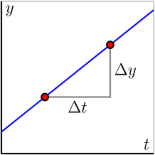
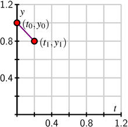
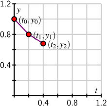

{In this section, we strive to understand the ideas generated by the following important questions:
- What is Euler's method and how can we use it to approximate the solution to an initial value problem?
- How accurate is Euler's method?
}
{In this section, we strive to understand the ideas generated by the following important questions:
}
In Section 7.2, we saw how a slope field can be used to sketch solutions to a differential equation. In particular, the slope field is a plot of a large collection of tangent lines to a large number of solutions of the differential equation, and we sketch a single solution by simply following these tangent lines. With a little more thought, we may use this same idea to numerically approximate the solutions of a differential equation.
Consider the initial value problem
\[ \frac{dy}{dt} = \frac12 (y + 1), \ y(0) = 0. \]\knownindex{\lt main>Euler's Method\lt /main>}
Preview Activity demonstrates the essence of an algorithm, which is known as Euler's Method, that generates a numerical approximation to the solution of an initial value problem. 1 In this algorithm, we will approximate the solution by taking horizontal steps of a fixed size that we denote by \(\Delta t\).
Before explaining the algorithm in detail, let's remember how we compute the slope of a line: the slope is the ratio of the vertical change to the horizontal change, as shown in the following figure.
In other words, \(m = \frac{\Delta y}{\Delta t}\). Said differently, the vertical change is the product of the slope and the horizontal change:
\[ \Delta y = m\Delta t. \]Suppose that we would like to solve the initial value problem
\[ \frac{dy}{dt} = t - y, \ y(0) = 1. \]While there is an algorithm by which we can find an algebraic formula for the solution to this initial value problem, and we can check that this solution is \(y(t) = t -1 + 2e^{-t}\), we are instead interested in generating an approximate solution by creating a sequence of points \((t_i, y_i)\), where \(y_i\approx y(t_i)\). For this first example, we choose \(\Delta t = 0.2\).
{3.6in} Since we know that \(y(0) = 1\), we will take the initial point to be \((t_0,y_0) = (0,1)\) and move horizontally by \(\Delta t = 0.2\) to the point \((t_1,y_1)\). Therefore, \(t_1=t_0+\Delta t = 0.2\). The differential equation tells us that the slope of the tangent line at this point is \[ m=\frac{dy}{dt}\bigg\vert_{(0,1)} = 0-1 = -1. \] Therefore, if we move along the tangent line by taking a horizontal step of size \(\Delta t=0.2\), we must also move vertically by \[ \Delta y = m\Delta t = -1\cdot 0.2 = -0.2. \] We then have the approximation \(y(0.1) \approx y_1= y_0 + \Delta y = 1 - 0.2 = 0.8.\) At this point, we have executed one step of Euler's method.{2in} {3.6in} Now we repeat this process: at \((t_1,y_1) = (0.2,0.8)\), the differential equation tells us that the slope is \[ m=\frac{dy}{dt}\bigg\vert_{(0.2,0.8)} = 0.2-0.8 = -0.6. \] If we move horizontally by \(\Delta t\) to \(t_2=t_1+\Delta = 0.4\), we must move vertically by \[ \Delta y = -0.6\cdot0.2 = -0.12. \] We consequently arrive at \(y_2=y_1+\Delta y = 0.8-0.12 = 0.68\), which gives \(y(0.2)\approx 0.68\). Now we have completed the second step of Euler's method.{2in} If we continue in this way, we may generate the points \((t_i, y_i)\) shown at left in Figure 7.3.1. In situations where we are able to find a formula for the actual solution \(y(t)\), we can graph \(y(t)\) to compare it to the points generated by Euler's method, as shown at right in Figure 7.3.1.
Because we need to generate a large number of points \((t_i,y_i)\), it is convenient to organize the implementation of Euler's method in a table as shown. We begin with the given initial data.
From here, we compute the slope of the tangent line \(m=dy/dt\) using the formula for \(dy/dt\) from the differential equation, and then we find \(\Delta y\), the change in \(y\), using the rule \(\Delta y = m\Delta t\).
Next, we increase \(t_i\) by \(\Delta t\) and \(y_i\) by \(\Delta y\) to get
and then we simply continue the process for however many steps we decide, eventually generating a table like the one that follows.
\knownindex{\lt main>Euler's Method\lt /main>\lt sub>error\lt /sub>}
Since we are approximating the solutions to an initial value problem using tangent lines, we should expect that the error in the approximation will be less when the step size is smaller. To explore this observation quantitatively, let's consider the initial value problem
\[ \frac{dy}{dt} = y, \ y(0) = 1 \]whose solution we can easily find.
Consider the question posed by this initial value problem: “what function do we know that is the same as its own derivative and has value 1 when \(t=0\)?” It is not hard to see that the solution is \(y(t) = e^t\). We now apply Euler's method to approximate \(y(1) = e\) using several values of \(\Delta t\). These approximations will be denoted by \(E_{\Delta t}\), and these estimates provide us a way to see how accurate Euler's Method is.
To begin, we apply Euler's method with a step size of \(\Delta t = 0.2\). In that case, we find that \(y(1) \approx E_{0.2} = 2.4883\). The error is therefore \(y(1) - E_{0.2} = e - 2.4883 \approx 0.2300\).
Repeatedly halving \(\Delta t\) gives the following results, expressed in both tabular and graphical form.
{2.0in}Notice, both numerically and graphically, that the error is roughly halved when \(\Delta t\) is halved. This example illustrates the following general principle.
{ If Euler's method is to approximate the solution to an initial value problem at a point \(\overline{t}\), then the error is proportional to \(\Delta t\). That is,
\[ y(\overline{t}) - E_{\Delta t} \approx K\Delta t \]for some constant of proportionality \(K\).
}
\item Euler's method is an algorithm for approximating the solution to an initial value problem by following the tangent lines while we take horizontal steps across the \(t\)-axis. \item If we wish to approximate \(y(\overline{t})\) for some fixed \(\overline{t}\) by taking horizontal steps of size \(\Delta t\), then the error in our approximation is proportional to \(\Delta t\).
\hrulefill
\begin{exercises} \item Newton's Law of Cooling says that the rate at which an object, such as a cup of coffee, cools is proportional to the difference in the object's temperature and room temperature. If \(T(t)\) is the object's temperature and \(T_r\) is room temperature, this law is expressed at
\[ \frac{dT}{dt} = -k(T-T_r), \]where \(k\) is a constant of proportionality. In this problem, temperature is measured in degrees Fahrenheit and time in minutes.
\item We have seen that the error in approximating the solution to an initial value problem is proportional to \(\Delta t\). That is, if \(E_{\Delta t}\) is the Euler's method approximation to the solution to an initial value problem at \(\overline{t}\), then
\[ y(\overline{t})-E_{\Delta t} \approx K\Delta t \]for some constant of proportionality \(K\).
In this problem, we will see how to use this fact to improve our estimates, using an idea called accelerated convergence.
\item In this problem, we'll modify Euler's method to obtain better approximations to solutions of initial value problems. This method is called the Improved Euler's method.
In Euler's method, we walk across an interval of width \(\Delta t\) using the slope obtained from the differential equation at the left endpoint of the interval. Of course, the slope of the solution will most likely change over this interval. We can improve our approximation by trying to incorporate the change in the slope over the interval.
Let's again consider the initial value problem \(dy/dt = y\) and \(y(0) = 1\), which we will approximate using steps of width \(\Delta t = 0.2\). Our first interval is therefore \(0\leq t \leq 0.2\). At \(t=0\), the differential equation tells us that the slope is 1, and the approximation we obtain from Euler's method is that \(y(0.2)\approx y_1= 1+ 1(0.2)= 1.2\).
This gives us some idea for how the slope has changed over the interval \(0\leq t\leq 0.2\). We know the slope at \(t=0\) is 1, while the slope at \(t=0.2\) is 1.2, trusting in the Euler's method approximation. We will therefore refine our estimate of the initial slope to be the average of these two slopes; that is, we will estimate the slope to be \((1+1.2)/2 = 1.1\). This gives the new approximation \(y(1) = y_1 = 1 + 1.1(0.2) = 1.22\).
The first few steps look like this:
\end{exercises} \afterexercises
\clearpage